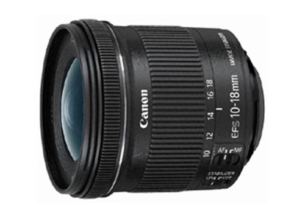

换算成35mm规格，相当于约16-29mm的视角，是具有高画质又便于携带的广角变焦镜头。高性价比，可轻松体验广角镜头的乐趣。光学系统搭载了IS影像稳定器，最大可获得相当于提高约4级快门速度※的手抖动补偿效果。不使用三脚架也能够在昏暗的地方轻松进行手持拍摄。活用最大约107°的广阔视角，能将风景等一并收入画面，还能活用广角镜头特有的透视效果，自由控制画面纵深感。另外，越靠近被摄体时变形效果越强，可拍摄出强调被摄体局部的个性照片。使用大口径非球面镜片和UD镜片，整个变焦范围都保持了高画质。新设计的4组变焦结构，令镜头更加小巧轻便。约240克的重量十分适合旅行及日常抓拍等。镜头的长度和口径相对控制得较小，亦适用于搭配小型轻量相机使用。搭载STM步进马达，无论拍摄静止图像还是短片，都能安静且迅速地对焦。若与EF-S 18-55mm f/3.5-5.6 IS STM和EF-S 55-250mm f/4-5.6 IS STM搭配，或与EF-S 18-135mm f/3.5-5.6 IS STM搭配，就能无缝对接从广角焦段到远摄焦段，从而对应多种拍摄场景。
※ 基于CIPA标准
| 镜头焦距 | 10-18mm |
|---|---|
| APS-C画幅下的35mm规格换算焦距 *1 | 约16-29mm |
| 镜头结构 | 11组14片 |
| 光圈叶片 | 7片（圆形光圈） |
| 最小光圈 *2 | 22-27 |
| 最近对焦距离 | 约0.22米 |
| 最大放大倍率 *3 | 约0.15倍 |
| 驱动系统 | STM +导螺杆型单元 |
| 手抖动补偿效果 | 约4级(18mm焦距端，根据CIPA标准) |
| 滤镜直径 | 67毫米 |
| 最大直径及长度 | 约Φ74.6×72毫米 |
| 重量 | 约240克 |
光圈值：f/11
快门速度：1/320秒